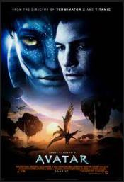

Watching Movies & Series
Avatar
2009
Action/Fantasy/Sci-Fi

This movie has an amazing genre. I'm a big fan of fantasy stories, and this movie met my expectations.
The production is excellent, as is the acting of the characters.
Guardian: The Lonely And Great God
2016
Kdrama/Romance/Fantasy/Comedy
My favorite and the only K-drama series that I have watched.
This series made me cry, and their background music is really unforgettable.
Also, the actors are great, and they will really make you their fan in the future.
One Piece
1999
Action/Fantasy/Comedy/Adventure
My favorite anime adventure series This series is full of emotions and inspirations.
Watching over 800+ of its episodes really proves that this series is entertaining for me.
Bridge to Terabithia
2007
Action/Adventure/Drama/Family/Fantasy
My favorite childhood movie and still rewatching until now.
The story is just unforgettable and very meaningful.
Though, it has a very sad scene at the last part of the movie.
Spirited Away
2001
Action/Adventure/Animation/Family/Fantasy/Mystery
First Ghibli series I have watched. It's a very artistic story that will take you into the author's imagination.
and show you how great and wonderful it is.